Renderings for Thurman Design Studio
A short folio of our work, put together for Laura.
- Prepared for
- Laura Thurman
- Studio
- Thurman Design Studio
- Location
- Nashville, Tennessee
- Date
- October 2026
- Prepared by
- Alex and Alexandra Lane, Tovizy
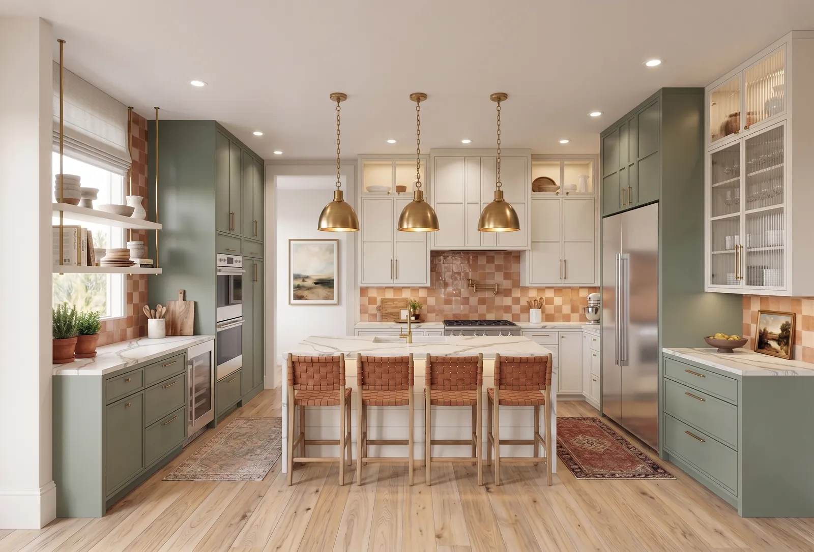
Laura,
Your Design step promises a complete vision with drawings, layouts, materials, furnishings and a realistic budget, and one client credits you with working with the builder so every interior finish came out right. We can turn those drawings into photoreal views of each room, so a Nashville or Franklin homeowner sees the colors, textures and furnishings together before anything is ordered or installed. Below is work close to yours, and how a first room would go.
Alex LaneTovizy, 3D visualization studio
From the drawing to the finished room.
Drag across the picture. On the left is what we were sent, on the right is what the client saw.
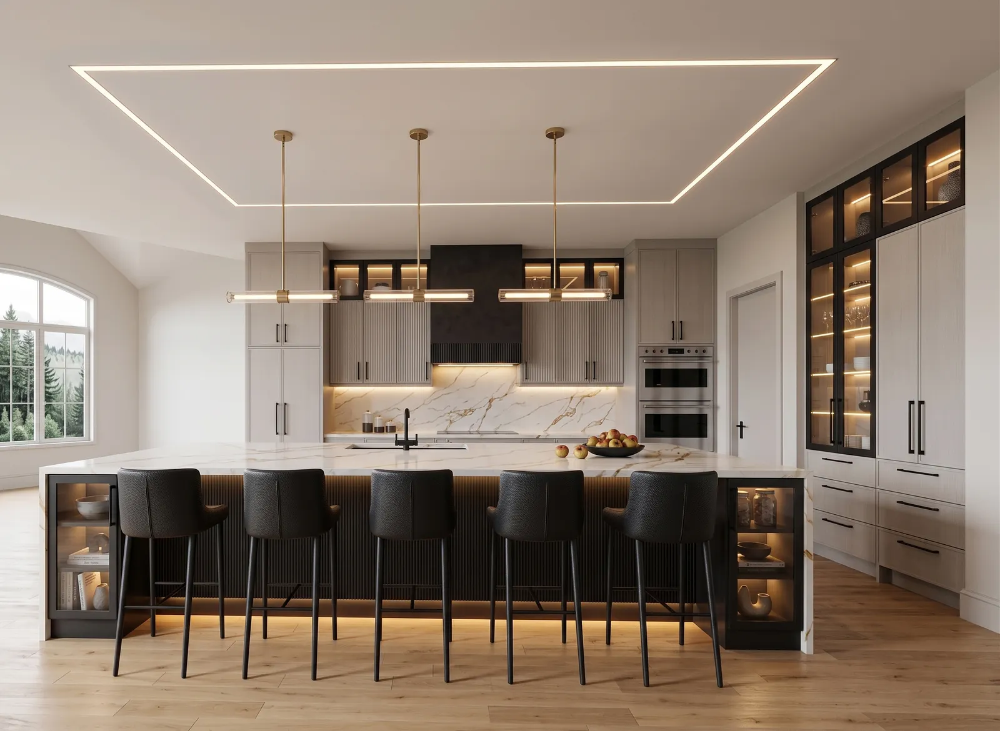
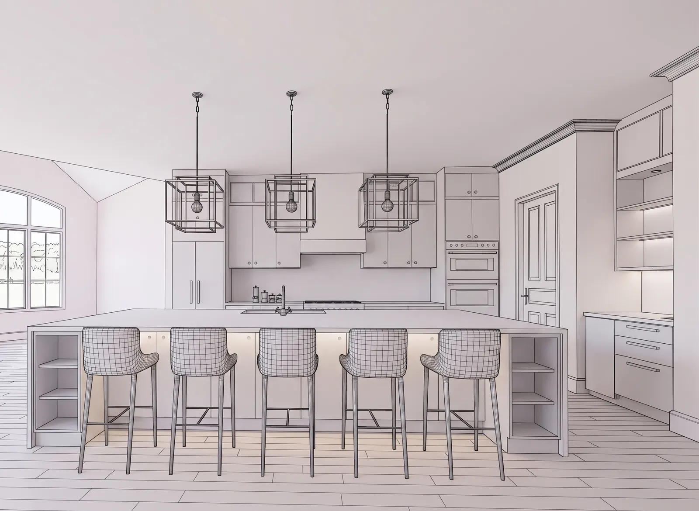
Rooms close to the ones you design
All projects on tovizy.com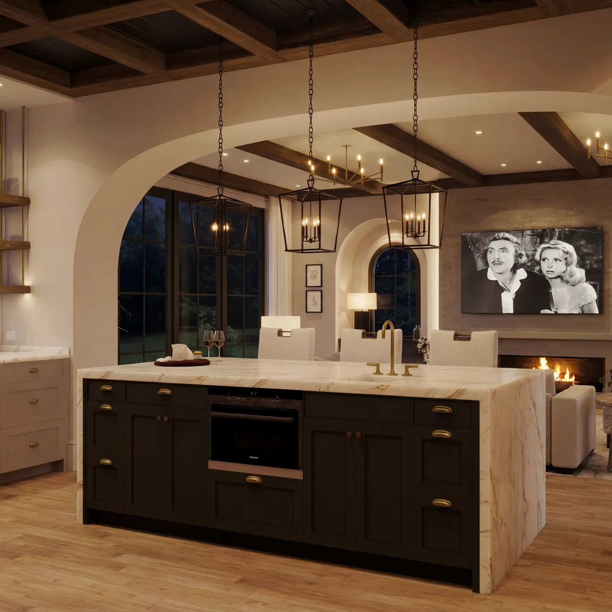
Transitional Home
Dark shaker island, evening light
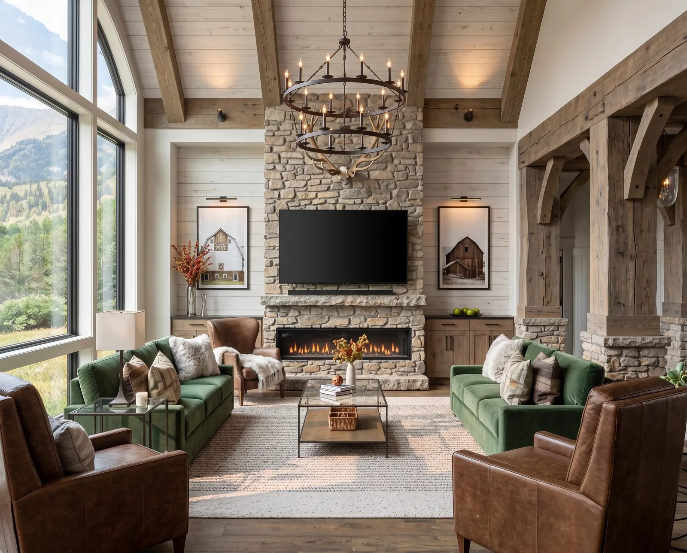
Hillside Farmhouse
Living room under timber trusses
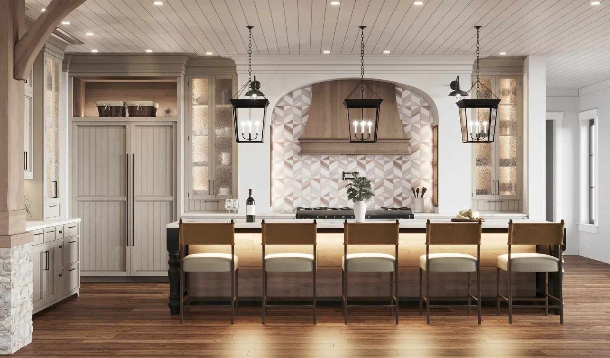
Kitchens
An arched plaster hood and lantern pendants
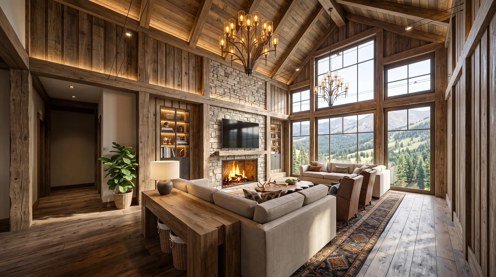
Mountain Great Room
Reclaimed timber and a wall of glass
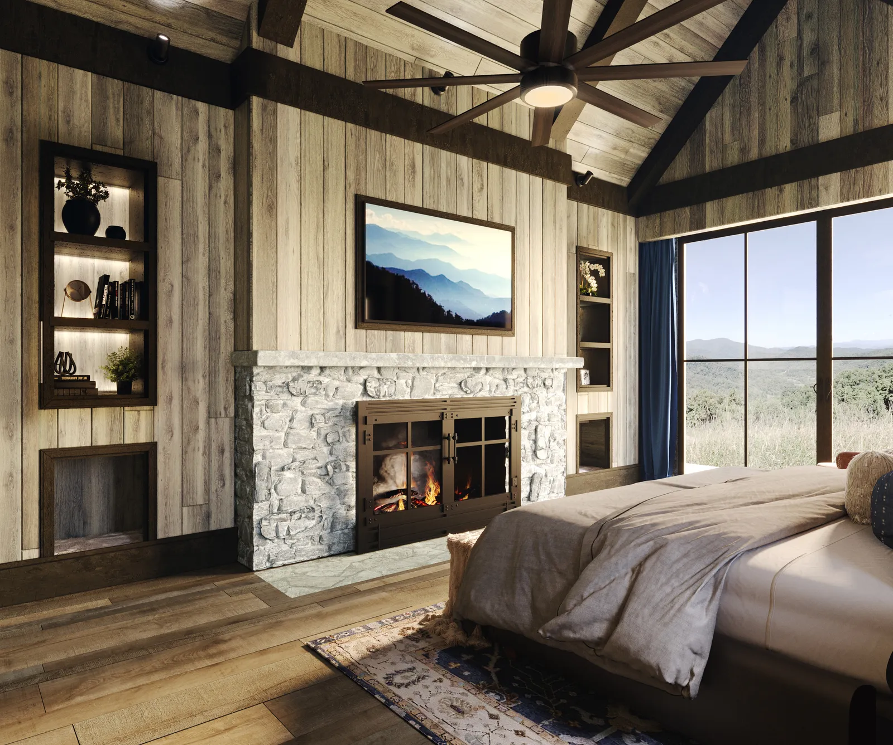
Mountain Primary Suite
Barnwood and a stone fireplace
One kitchen, two finishes.
The same model rendered in navy and in natural oak. Geometry and light stay identical, so the homeowner chooses cabinetry from pictures instead of door samples.
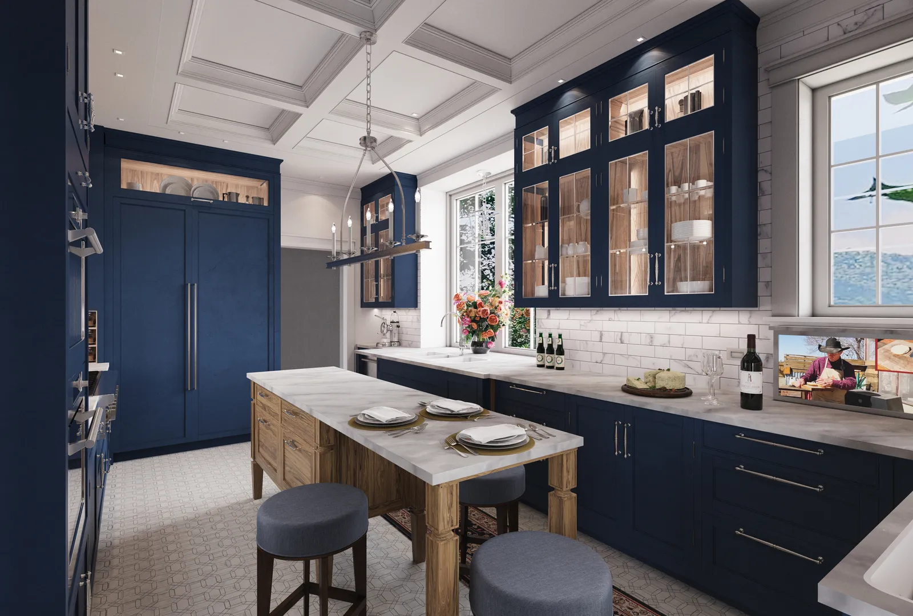
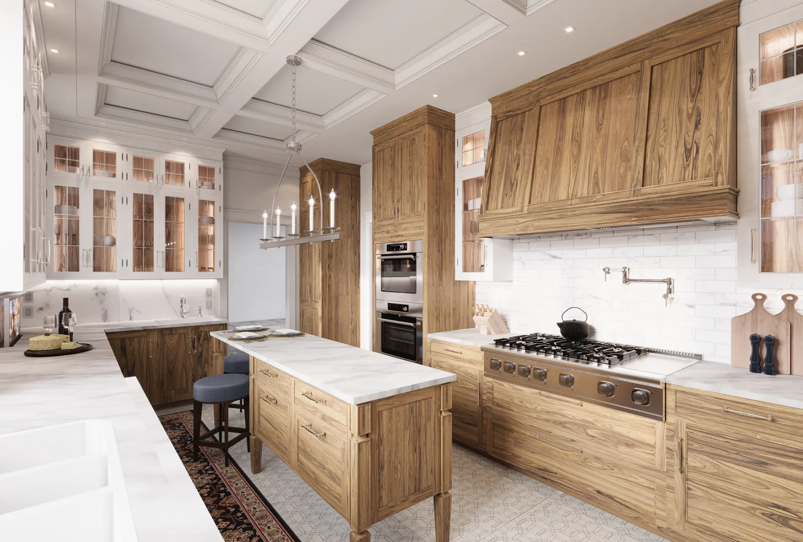
How a first project goes.
You send one room
Plans, elevations, CAD or SketchUp files, or a clear sketch, with any selections and product links you have.
A free concept and a fixed quote
We make a quick concept image so you can judge the look, and price the full views from their number, the detail and your deadline. Nothing starts until you approve it.
Quote within one business day
You review the first views
Two rounds of revisions are included. Rush delivery in 48 hours is available.
Five to seven business days
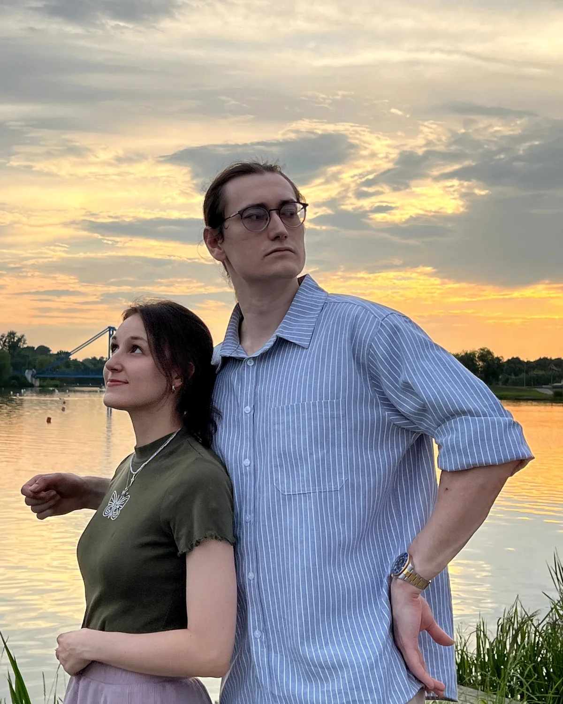
Tovizy is the studio of Alex and Alexandra Lane. Since 2013 we have rendered American homes, kitchens and restaurants for the designers and architects who drew them.
Working with this team has transformed how we present our architectural concepts to clients. The photorealistic quality and attention to detail in every render allows our designs to speak for themselves before a single brick is laid.
Douglas Stratton, Stratton Design Group, Asheville, North Carolina
Send one room.
Reply to my email with the plan of a room you are working on, plus any selections you have. The first concept is free, so you can judge the look before you commit to anything.